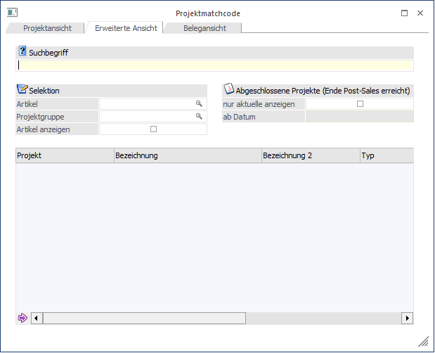
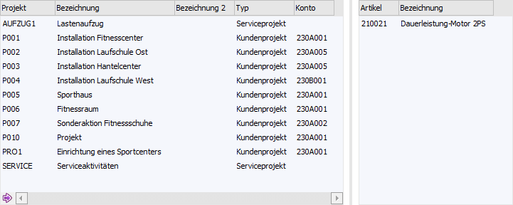
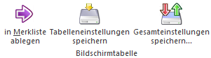
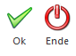

Wenn der Fokus in dem Feld "Projektnummer" liegt und das Lupen-Symbol bzw. die Taste F9 gedrückt wird, dann öffnet sich das Programm "Projektmatchcode". An dieser Stelle kann gezielt nach Projekten gesucht werden.
Hinweis
Wenn in dem Feld "Projektnummer" ein Teil der gesuchten Projektnummer oder der Bezeichnung eingetragen wurde und die Taste F9 gedrückt wird, dann wird diese Eingabe als Suchbegriff übernommen und die Suche direkt gestartet.
Grundsätzlich unterteilt sich der Matchcode in die folgenden Register, wobei immer der Matchcode in dem zuletzt verwendeten Register aufgerufen wird:
ü Projektansicht
In diesem
Register kann durch Eingabe eines Suchbegriffs innerhalb der Projektnummer und
der Bezeichnung gesucht werden.
ü Erweiterte Ansicht (aktuelles
Register)
In diesem Register kann neben dem Suchbegriff auch über
Serviceartikel oder die Projektgruppe gesucht werden.
ü Belegansicht
In diesem Register
können alle Belege dargestellt werden, welche zu einem Projekt erfasst
wurden.
ü Kampagnen
In diesem Register
kann durch Eingabe eines Suchbegriffs nach Kampagnen / Merklisten gesucht
werden.
Hinweis
Der Kampagnenmatchcode steht nur zur Verfügung, wenn der Matchcode über eine CRM-Vorlage, die Projekterfassung oder über die Projektinfo geöffnet wird (nähere Information zu dem Kampagnenmatchcode entnehmen Sie bitte dem Kapitel "Kampagnenmatchcode").

Ø Suchbegriff
Die Auswahl kann durch einen Suchbegriff eingeschränkt werden. Die Suche erfolgt in den Feldern "Projekt", "Bezeichnung", sowie "Bezeichnung 2".
Ø Artikel
Es kann nach einem Artikel selektiert werden. Damit werden nur Projekte mit dem angegebenen Artikel angezeigt.
Ø Projektgruppe
Es kann nach einer Projektgruppe selektiert werden. Damit werden nur Projekte mit der hinterlegten Projektgruppe angezeigt.
Ø Artikel anzeigen
Ist die Checkbox aktiv, werden bei Serviceprojekten im rechten Teil des Fensters die beim Projekt hinterlegten Wartungsartikel angezeigt.
Ø Abgeschlossene Projekte (Ende Post-Sales erreicht)
Ist die Checkbox "nur aktuelle anzeigen" aktiv, so kann ein Datum eingegeben werden. Dies dient dazu, um abgeschlossene Projekte nicht anzuzeigen. Es wird hier nach dem Datum "Ende Post-Sales erreicht" selektiert.
Ergebnistabelle

In der Tabelle werden alle zutreffenden Projekte mit Bezeichnung und Typ angezeigt. Ist das Projekt einem Konto zugeordnet, wird auch die entsprechende Kontonummer angezeigt. Durch einen Doppelklick mit der Maus oder durch Drücken der Enter-Taste kann das Projekt übernommen werden.
Hinweis für die Anzeige der Artikel
Wurde ein Artikel bei einem Projekt ausgetauscht (einmal mit Plus- und einmal mit Minusmenge) wird dieser nicht mehr angezeigt.
Wird jedoch nach einem Artikel in der Selektion eingeschränkt, werden auch jene Projekte angezeigt, wo der Artikel ausgetauscht wurde. Also alle, in denen er jemals vorgekommen ist.
Tabellenbuttons

Ø in Merkliste ablegen
Durch Anklicken des Buttons "In Merkliste ablegen" werden die zuvor selektiert Einträge in eine Merkliste / Kampagne übergeben.
Ø Tabelleneinstellungen speichern
Die Spalten einer Tabelle können grundsätzlich an beliebige Positionen verschoben, bzw. in der Breite entsprechend angepasst werden. Durch Anwahl des Buttons "Tabelleneinstellungen speichern" werden die Einstellungen benutzerspezifisch gespeichert und bei dem nächsten Aufruf des Programmpunktes wieder vorgeschlagen.
Ø Gesamteinstellungen speichern
Im Gegensatz zu "Tabelleneinstellungen speichern" können mit "Gesamteinstellungen speichern" mehrere Tabellenaufbauten gespeichert und nach Wunsch geladen werden. Zusätzlich werden Sonderfunktionen der Tabelle (z.B. "Spalte gruppieren") ebenfalls bei der Speicherung bedacht.
Buttons

Ø Ok
Durch Anwahl des Buttons "Ok" bzw. der Taste F5 wird die Projektsuche gestartet.
Hinweis
Durch Bestätigung der Eingabe im Feld "Suchbegriff" wird die Projektsuche ebenfalls gestartet.
Ø Ende
Durch Anwahl des Buttons "Ende" bzw. der Taste ESC wird der Programmbereich geschlossen.